Almoço no fogão à lenha, de frente para a lagoa.
Quarta a domingo, no Gaspar Alto.
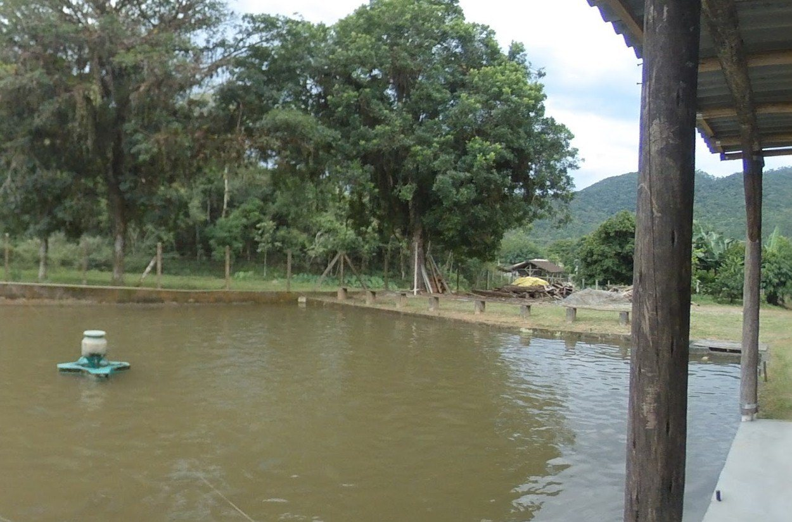
Como é a semana
- Quarta a sábadoÀ la carte
- DomingoBuffet livre
- Segunda e terçaFechado
- Das 8h às 18hde quarta a domingo
Grupos e empresas: consulte pelo WhatsApp. Atendimento à noite com reserva: a confirmar.
Na cozinha
Comida caseira feita no fogão à lenha, com peixe e carne. Em volta, pomar e horta sem agrotóxicos, segundo reportagem do Correio Comunitário.
“Almoço com comida caseira peixe e carne Lugar perfeito para familia e crianças”
destaque das avaliações no Google
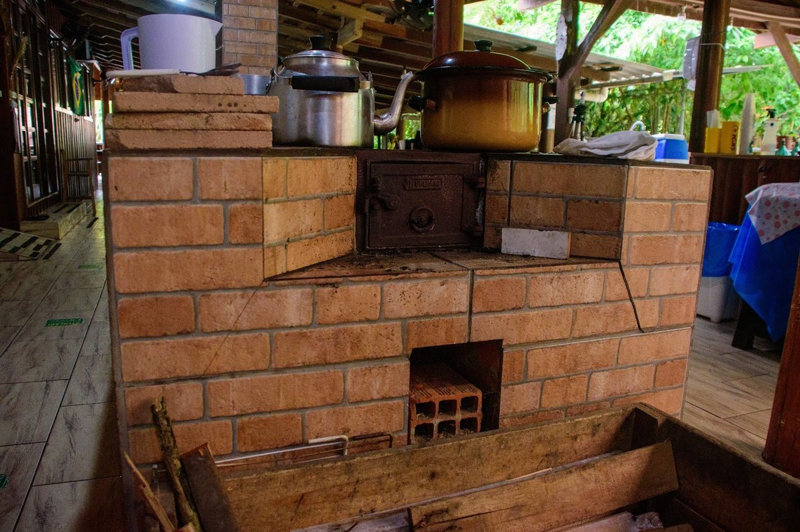
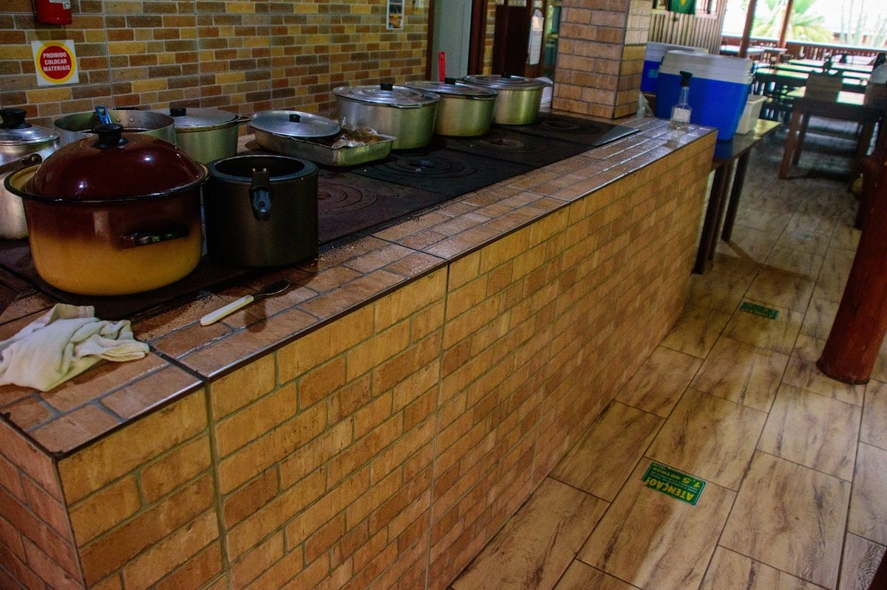
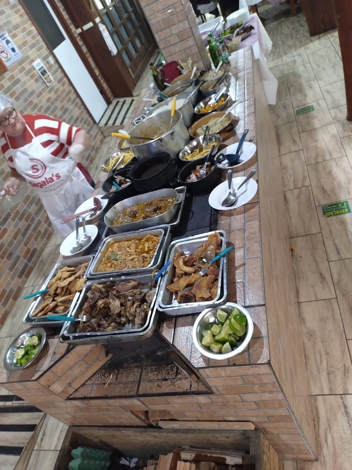
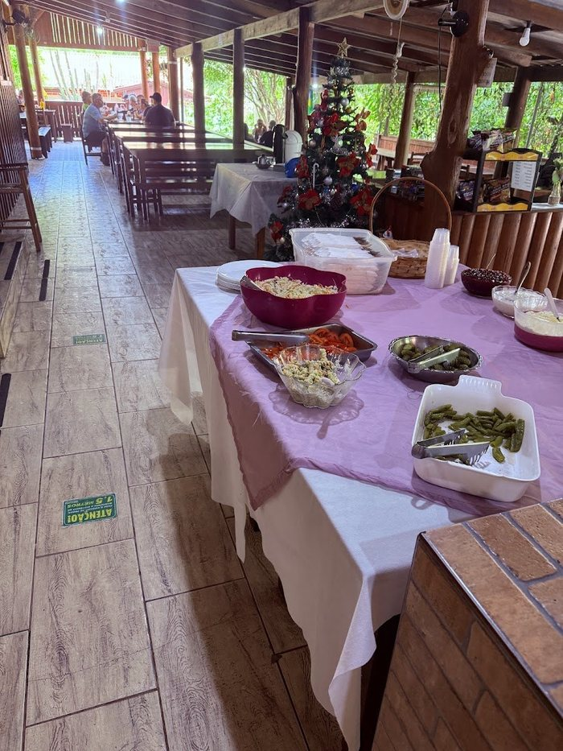
A pesca
As lagoas têm aerador e chafariz. Uma cliente contou, em 2022: “Tem uma lagoa ativa e uma desativada”.
Antes de vir pescar, confirme com o restaurante:
- como funciona a pesca e o valor
- se precisa levar equipamento e isca
- quais peixes estão na lagoa
- se dá para levar o peixe limpo
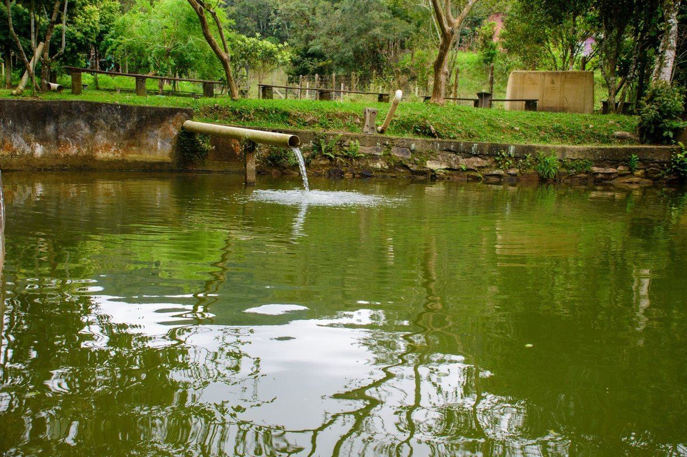
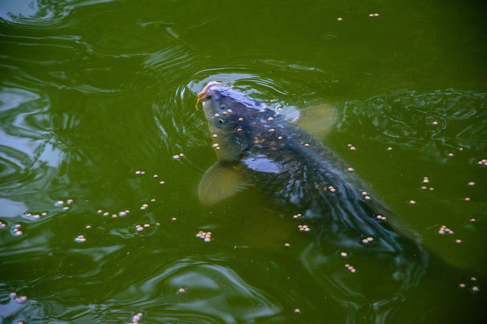
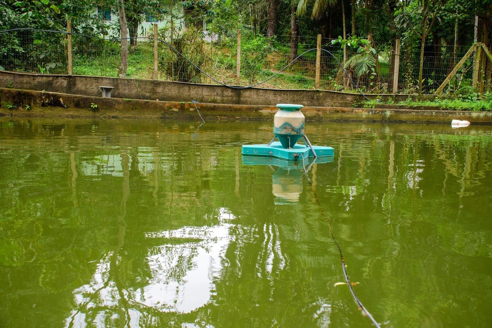
O lugar
Salão aberto de madeira, com redes e vista para a lagoa. Estacionamento amplo, segundo avaliação de cliente.
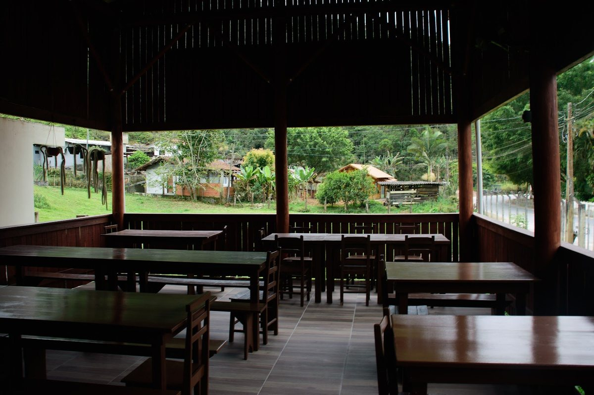
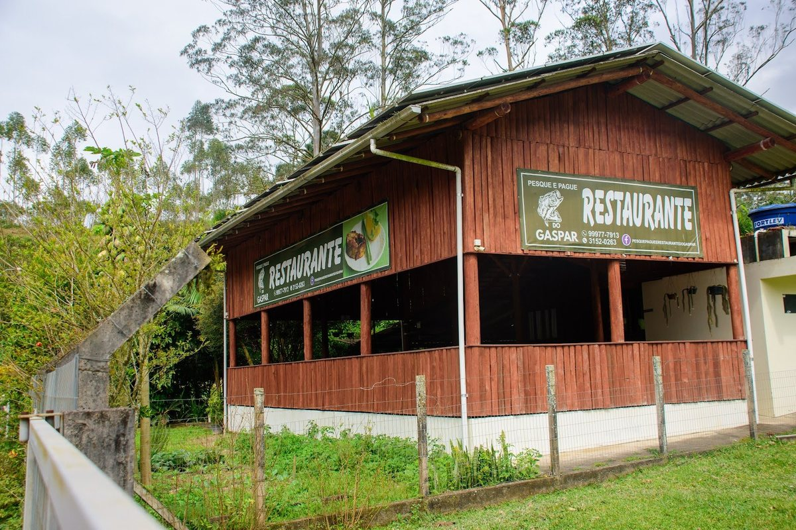
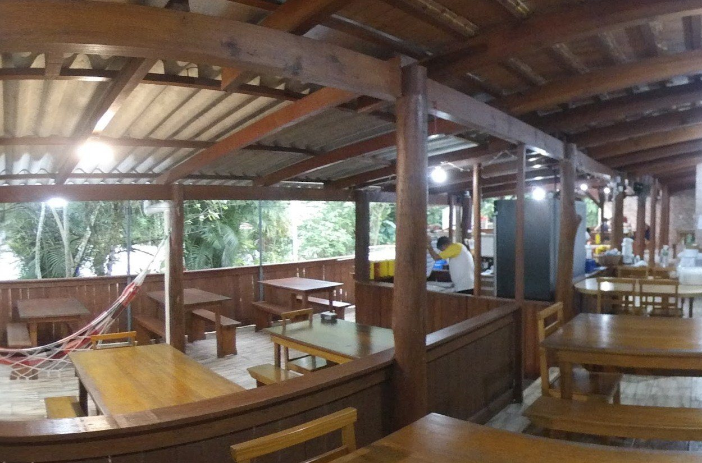
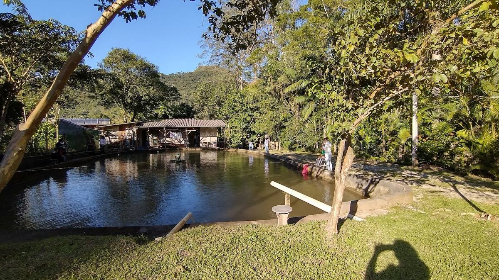
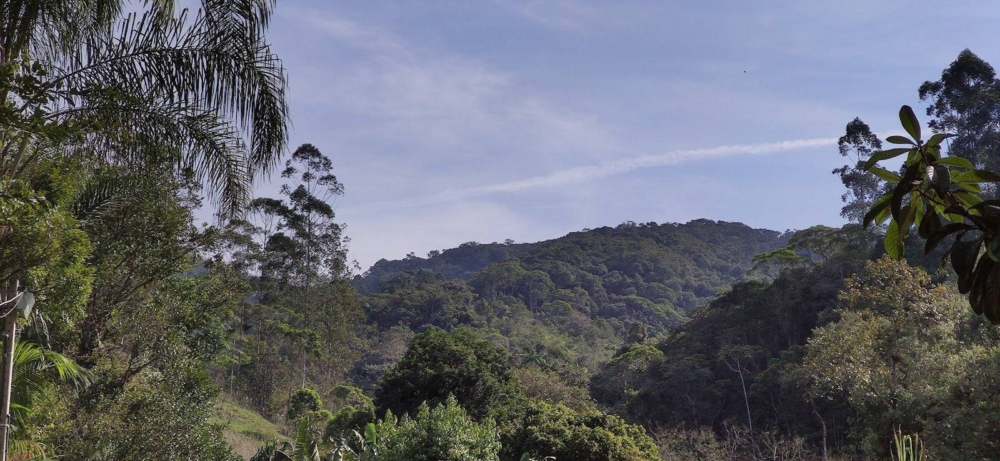
Vem em grupo?
Família, empresa ou turma de amigos: mande data e número de pessoas, e o restaurante responde pelo WhatsApp.
Funcionamento: quarta a domingo, das 8h às 18h. A reserva só vale depois da resposta do restaurante.
4,6 no Google 251 avaliações
“Melhor lugar pra almoçar e pegar peixes”
Marcos, 5★, mar/2026“Ambiente tranquilo, muitas frutas no local hahaha Bons pratos !!!”
destaque do Google“Na primeira vez, foi servido buffet e foi ótimo!!”
destaque do Google
Como chegar
Estrada Geral, 12550 · Gaspar Alto
Gaspar/SC · CEP 89111-620
Logo após o Refúgio.
Traçar rota- WhatsApp(47) 99977-7913
- Telefone(47) 3152-0263
- E-mailpesquepaguedogaspar@hotmail.com
- Horárioqua a dom, 8h às 18h · seg e ter fechado